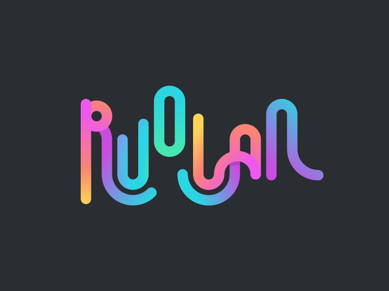
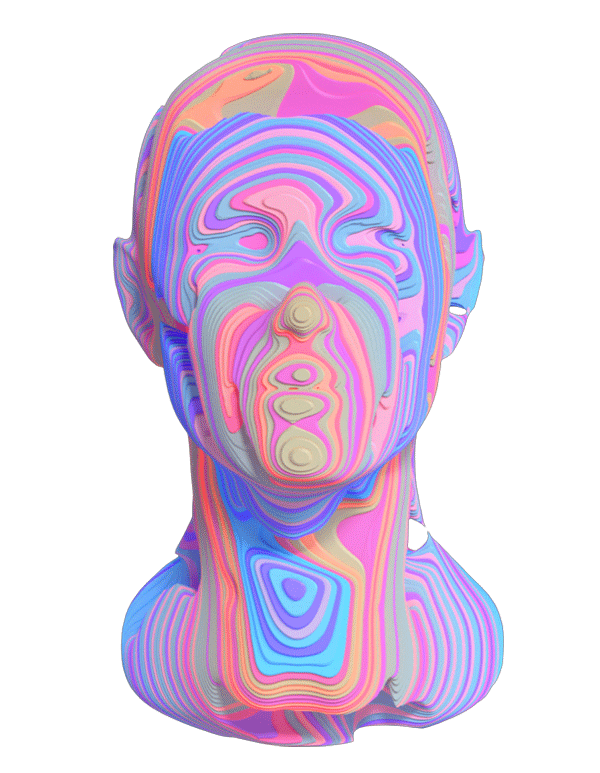

Hey,
13 / AprilMy name is George and I am a developer. I believe in challenging myself by making beautifully designed applications that are efficient and simple to use. I just happen to be great with Java. Do you want to work with me?
Projects
09 / AprilWebit is a central view of all the projects that I have involved myself with. From project realisation to project actuation, design thinking helps me better understand the problem while programming allows me to execute upon it.
There is a difference between the external perception of an application and the underlying value proposition. I help to bridge the gap between strategy and execution, allowing breakthroughs of any unforeseen barrier.
Blog
09 / AprilGoing above and beyond the project’s scope allows me to form an experience that can be shared in a story telling format. Thus, I usually find myself filming a short video essay or writing about it on a blog.
